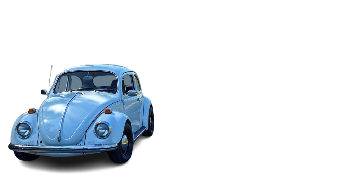
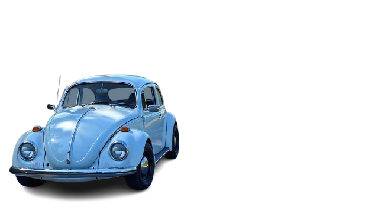
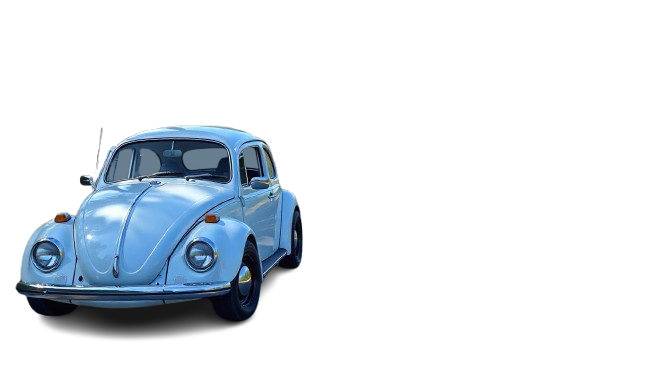
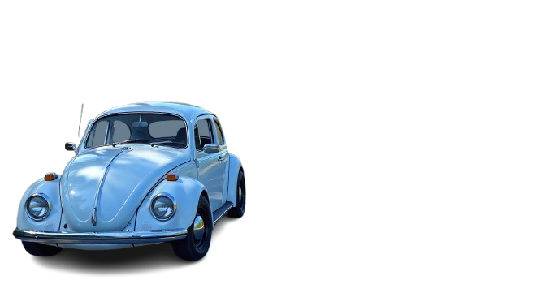

Nas curvas sinuosas, um balé de lata,
Um ícone nacional, que nunca nos falta.
Fusca, o besouro, de alma brasileira,
Marcou gerações, com sua simpatia.
Nas ruas estreitas, ou nas estradas abertas,
Levando sonhos, amores e esperanças incertas.
Seu ronco familiar, um hino à vida,
Em cada viagem, uma história dividida.
De pai para filho, uma herança querida,
Um carro de família, sempre bem quista.
Em cada detalhe, uma paixão genuína,
Um símbolo de resistência, eternamente divina.
Nas praias ensolaradas, ou nas montanhas frias,
O Fusca sempre presente, em suas alegrias.
Em cada encontro, uma nova aventura,
Um carro atemporal, que nunca se encruza.
Mas o tempo passa, e as coisas mudam,
Novas tecnologias, novos rumos.
Mas o Fusca, imortal, em nossos corações,
Vive para sempre, em nossas emoções.